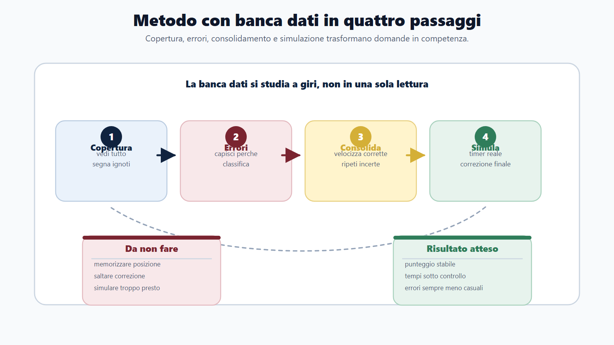
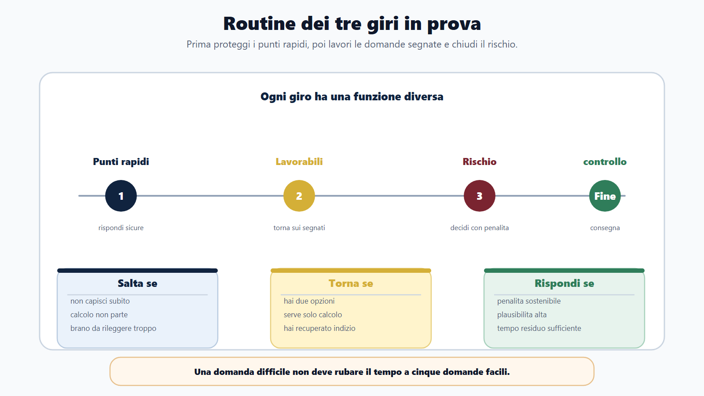
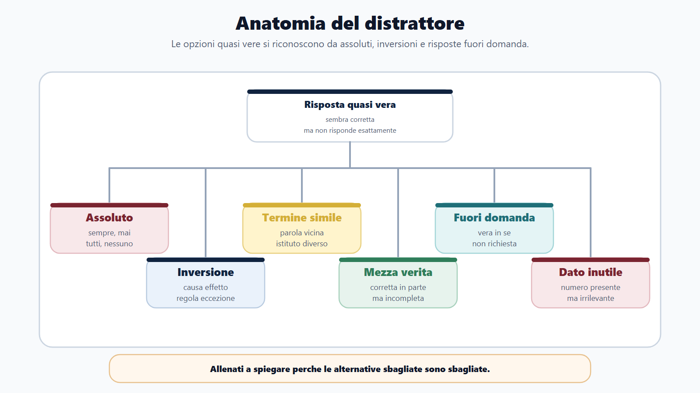
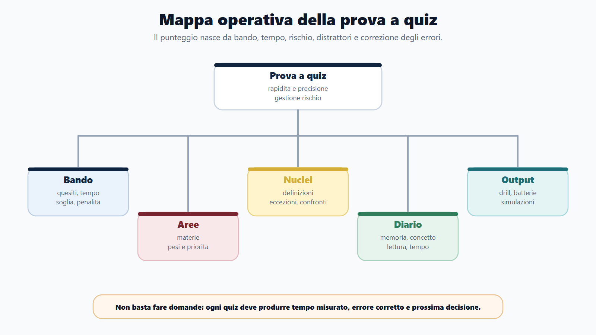
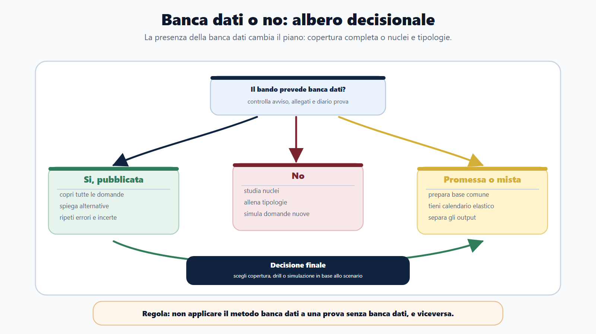
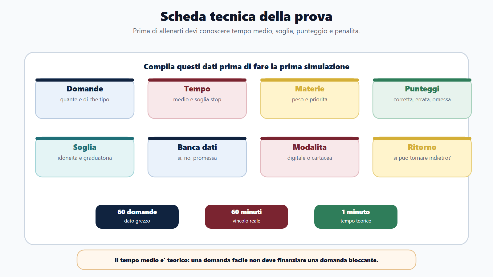

VOL-01 · Capitolo 14
Parte III · Allenarsi come in prova
La prova a quiz
Le risposte sono già lì. Resta selettiva perché misura conoscenza, rapidità, precisione di lettura e gestione del rischio. Premia chi riconosce il nucleo, elimina i distrattori e decide se rispondere, segnare o saltare.
Schema
Banca dati quattro passaggi

Schema
Routine tre giri

Schema
Anatomia del distrattore

Schema
Mappa operativa prova quiz

Schema
Banca dati albero decisionale

Schema
Scheda tecnica prova

01 · Perché è diversa
Il quiz non premia chi ha sottolineato di più
Una risposta può essere sbagliata per una negazione ignorata, due istituti confusi, una parola assoluta letta male o troppo tempo speso su una domanda. Va preparato come una prova specifica, non come un accessorio alla teoria. Ogni materia deve diventare domanda possibile; ogni errore deve diventare dato.
Che cos’è
Una prova a risposta chiusa che offre già le opzioni. Non misura solo memoria: misura lettura, esclusione, tempo e rischio. La simulazione deve assomigliare alla prova reale: numero di quesiti, timer, regole di punteggio, penalità, soglia, assenza di pause.
Quattro domande prima di allenarti
Esiste una banca dati ufficiale? Quanto tempo ho per domanda? Che cosa succede se sbaglio? Quali errori sto ripetendo? Se non conosci queste quattro risposte, stai solo facendo domande a caso.
La cornice generale è il D.P.R. 9 maggio 1994, n. 487, come modificato dal D.P.R. 16 giugno 2023, n. 82. È un regolamento quadro: numero dei quesiti, tempo, penalità, punteggio minimo ed eventuale banca dati restano decisi dal bando specifico. Il libro non fissa valori assoluti su questi punti.
02 · BANDO
Scheda tecnica prima delle batterie
La riga più importante è il tempo medio. Se hai sessanta domande in sessanta minuti, il tempo teorico è un minuto. Non tutte le domande valgono lo stesso investimento: alcune si risolvono in venti secondi, altre possono assorbire tre minuti.
| Che cosa cerchi | Prodotto | Se la salti | |
|---|---|---|---|
| B — Bando | Numero quesiti, materie, tempo, soglia, penalità, banca dati, modalità, possibilità di tornare indietro. | Scheda tecnica della prova. | Alleni un formato che non è quello reale. |
| A — Aree | Diritto, logica, inglese, informatica, profilo: peso e priorità. | Tabella materie. | Fai quiz casuali su tutto, senza gerarchia. |
| N — Nuclei | Argomenti ricorrenti, definizioni, eccezioni, confronti, distrattori. | Lista da drillare. | Insegui ogni raccolta online. |
| D — Diario | Errori per memoria, concetto, lettura, tempo, strategia. | Registro errori quiz. | Il punteggio resta un numero senza diagnosi. |
| O — Output | Batterie, drill, simulazioni complete, correzioni ragionate. | Punteggio stabile e tempi sotto controllo. | Consumi domande senza migliorare. |
Una domanda difficile non deve rubare il tempo a cinque domande facili.
Il punteggio complessivo vale più dell’orgoglio sulla singola risposta. Saltare non significa arrendersi: significa proteggere i punti e tornare dopo, se il formato lo consente.
03 · Prima decisione
Banca dati o no: cambia il metodo
Con banca dati ufficiale il problema non è trovare domande. È coprirle tutte senza memorizzare meccanicamente la posizione della risposta. Devi sapere perché una risposta è corretta e perché le altre sono sbagliate.
| Scenario | Metodo | Errore da evitare |
|---|---|---|
| Banca dati ufficiale pubblicata | Copertura completa, errori, ripassi, simulazioni, memorizzazione ragionata. | Imparare «la C della domanda 214» senza il concetto. |
| Banca dati non pubblicata | Nuclei, quiz per tipologia, simulazioni originali, correzione concettuale. | Inseguire ogni raccolta online. |
| Promessa ma non ancora disponibile | Preparazione dei nuclei e calendario flessibile per assorbirla quando esce. | Restare fermi in attesa. |
| Prova mista | Separare quiz, risposta aperta, inglese, informatica e orale. | Allenare un solo formato. |
04 · Con banca dati
Quattro passaggi, non un unico giro
Nel primo giro devi vedere tutte le domande, non cercare subito la perfezione. Una risposta corretta per fortuna non è una competenza stabile: anche le incertezze vanno segnate.
Copertura
Quali materie pesano, quali domande sono ripetitive, quali nuclei ritornano, quali formulazioni ti traggono in errore, quali argomenti non conosci.
Errori
Non limitarti a rifare la domanda. Individua perché è sbagliata: memoria, concetto, lettura, distrattore, tempo.
Consolidamento
Le corrette devono diventare rapide. Le sbagliate tornano spesso. Le incerte restano nel diario.
Simulazione
Timer, numero domande, penalità, niente pause, correzione finale. Non è una batteria qualunque.
05 · Senza banca dati
Costruire tipologie, non accumulare fonti
Senza banca dati eviti due errori: fare quiz casuali e cambiare fonte ogni giorno. Per ogni materia crei una griglia di nuclei e tipi di domanda. Se sbagli sempre i confronti, non servono cento domande nuove: servono tabelle comparative.
| Materia | Nuclei | Tipi di domanda |
|---|---|---|
| Diritto amministrativo | Procedimento, provvedimento, accesso, silenzio. | Definizione, eccezione, confronto, caso breve. |
| Pubblico impiego | Doveri, responsabilità, codice di comportamento. | Principio, comportamento, conseguenza. |
| Informatica | File, rete, PEC, firma digitale, sicurezza. | Definizione, differenza, uso operativo. |
| Inglese | Grammatica, lessico, comprensione. | Completamento, sinonimo, brano. |
| Logica | Deduzioni, percentuali, brani, serie. | Schema, calcolo, esclusione. |
06 · Tre giri
Non tutte le domande nello stesso modo
In prova non devi affrontare ogni quesito con lo stesso investimento. I tre giri funzionano solo se esiste un secondo passaggio: quindi verifica se puoi tornare indietro.
Punti rapidi
Rispondi a ciò che riconosci con sicurezza. Se una domanda richiede calcolo lungo, brano difficile o ricordo incerto, segnala e vai avanti. Non restare bloccato.
Domande lavorabili
Torna sulle domande segnate. Ora investi più tempo su calcoli, brani, confronti e quesiti con due opzioni rimaste.
Rischio controllato
Solo alla fine decidi sulle dubbie. Se c’è penalità, sii più selettivo; se non c’è, la strategia cambia. Nessuna regola generale senza il bando.
Non capisci subito che cosa chiede; troppe informazioni da ordinare; brano da rileggere più di due volte; il calcolo non parte entro 30–40 secondi; stai rispondendo per stanchezza; il dubbio riguarda una penalità rilevante.
07 · Distrattori
Quasi vere, non assurde
Allenati a spiegare perché le risposte sbagliate sono sbagliate. È uno dei modi più rapidi per migliorare: riconosci il meccanismo, non solo l’opzione corretta di quella domanda.
| Distrattore | Segnale | Esempio di trappola |
|---|---|---|
| Assoluto | Sempre, mai, tutti, nessuno, solo. | Una regola vera diventa falsa se la rendi senza eccezioni. |
| Inversione | Scambia causa ed effetto, regola ed eccezione. | Confondi ciò che è condizione con ciò che è conseguenza. |
| Termine simile | Parole vicine ma non equivalenti. | Accesso civico e accesso documentale; nullità e annullabilità. |
| Mezza verità | Corretta in parte, ma incompleta. | Definizione giusta a cui manca il limite decisivo. |
| Fuori domanda / dato irrilevante | Vera in sé, ma non risponde al quesito. | Un numero presente nel testo che non è ciò che viene chiesto. |
08 · Correzione
Il punteggio non basta
Dopo una simulazione non limitarti a dire «ho fatto 42 su 60». Il punteggio è il risultato. Tu devi leggere il processo: ogni simulazione deve produrre tre nuclei da ripassare, una tipologia da drillare, una regola di tempo da modificare, una flashcard o tabella da creare, una decisione per la volta dopo.
| Tipo errore | Esempio | Azione |
|---|---|---|
| Memoria | Non ricordavi una definizione. | Flashcard e richiamo. |
| Concetto | Hai confuso accesso civico e accesso documentale. | Tabella comparativa. |
| Lettura | Hai ignorato «non». | Routine di lettura lenta della domanda. |
| Distrattore | Hai scelto una risposta plausibile ma incompleta. | Analisi delle alternative. |
| Tempo / strategia | Hai impiegato troppo, o hai indovinato. | Soglia di abbandono; anche le incertezze vanno nel diario. |
09 · Simulazioni
Quando iniziare e come farle
Le simulazioni complete non devono arrivare solo negli ultimi giorni. Entrano quando hai basi minime, ma prima della rifinitura finale. Una simulazione senza analisi è solo consumo di domande: non farle ogni giorno se poi non correggi.
Drill breve
Dieci-quindici domande su un nucleo. Serve a chiudere un pattern, non a misurare il punteggio complessivo.
Batteria tematica
Trenta domande su una materia. Mostra se il blocco è stabile o solo fresco di lettura.
Mista e parziale
Materie diverse con tempo, poi metà prova reale. Qui emergono tempo e strategia.
Completa
Prova reale con correzione. Timer, penalità, niente pause. Poi il piano di recupero.
10 · Caso guidato
Luca, preselettiva a tempo
Prepara una preselettiva con sessanta domande in sessanta minuti. La prima settimana fa batterie casuali e guarda solo il punteggio. Migliora poco: da 37 a 39 risposte corrette. Il miglioramento nasce dalla correzione, non dalla quantità.
Batterie e punteggio
Quiz casuali. Nessuna scheda tecnica. Non sa se c’è penalità, se c’è banca dati, quali errori ripete. Aumenta il volume, non la diagnosi.
Stesso tempo, altro lavoro
Niente banca dati, logica presente, penalità per errore. Pattern: «non», accessi, percentuali, domande lasciate troppo tardi. Drill mirati, poi 46 corrette e meno errori di lettura.
11 · Verifica
Due domande da saper spiegare
Come si prepara una prova a quiz in modo efficace?
Prima si legge il bando per capire numero di domande, materie, tempo, soglie, penalità e banca dati. Poi si studiano i nuclei, si fanno quiz per tipologia, si classificano gli errori e si passa a simulazioni sempre più simili alla prova reale. La correzione deve distinguere errore di memoria, concetto, lettura, tempo e strategia.
Fare molti quiz basta per essere preparati?
No. Fare molti quiz senza capire gli errori può consolidare abitudini sbagliate. Il quiz diventa allenamento solo quando produce feedback: perché ho sbagliato, che cosa devo ripassare, quale distrattore mi ha preso, quale regola di tempo devo cambiare.
12 · Mini-esercizio
Venti quiz già svolti, una sola categoria
Classifica ogni errore. Poi scegli la categoria più frequente e costruisci un drill da quindici minuti. Non passare a una nuova batteria prima di aver corretto il pattern principale.
| Categoria | Che cosa conti | Drill se è la più frequente |
|---|---|---|
| Memoria | Definizione o dato non recuperato. | Flashcard e richiamo sullo stesso nucleo. |
| Concetto | Due istituti scambiati. | Tabella comparativa, poi dieci confronti. |
| Lettura | Negazione, eccezione, «solo». | Routine: cerchiare le parole-spia prima delle opzioni. |
| Tempo | Domande lasciate o troppo lunghe. | Tre giri con soglia di abbandono. |
| Strategia / stress | Indovinato, cambiato senza motivo, distratto. | Regola di revisione e simulazione a tempo. |
13 · Distinzione
Quiz, logica e situazionali: stesso formato, altri distrattori
Il capitolo di logica fornisce gli strumenti di classificazione ed esclusione. I quesiti situazionali usano lo stesso formato a risposta multipla, ma i distrattori sono costruiti su comportamenti, non su calcoli. Il diario raccoglie entrambi.
Quiz di materia
Nucleo, definizione, eccezione, confronto. Il rischio è il termine simile e la mezza verità.
Logica e brani
Classifica il quesito prima delle opzioni. Un «non» o un «solo se» spostano la risposta.
Situazionali
Stesso metodo di eliminazione, ma vince il comportamento pubblico, non il buon senso generico.
Anatomia del bando indica formato, numero di quesiti, penalità e banca dati da verificare prima di impostare il piano. Senza quella lettura, ogni batteria è opinione.
14 · Da tenere ferme
Cinque regole, con il perché
1. La prova a quiz si prepara leggendo il bando, non solo facendo batterie, perché tempo, penalità, soglia e banca dati cambiano la strategia.
2. Con banca dati ufficiale serve copertura completa e ripasso degli errori, perché memorizzare la lettera della risposta non è padronanza.
3. Senza banca dati servono nuclei, tipologie e simulazioni miste, perché le raccolte casuali disperdono e non chiudono i pattern.
4. Il tempo si gestisce con più giri e soglie di abbandono, perché una domanda difficile non deve rubare cinque domande facili.
5. Ogni errore deve diventare una decisione di studio, perché il punteggio da solo non dice che cosa correggere.
Prossimo capitolo
La prova scritta e teorico-pratica
Dalle opzioni già scritte alla risposta da costruire: traccia, scaletta, spazio, caso e atto, senza inventare norme.